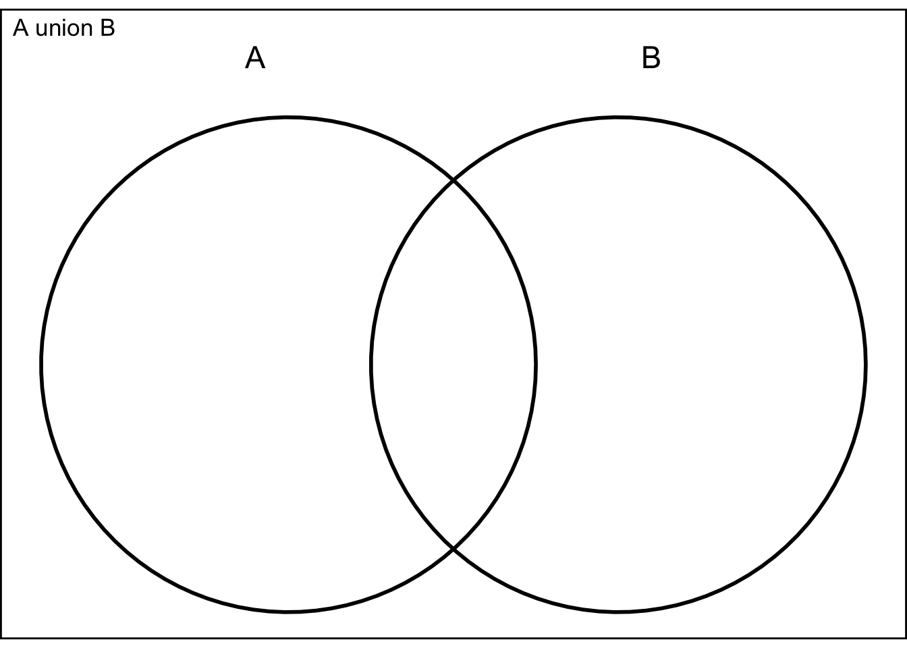
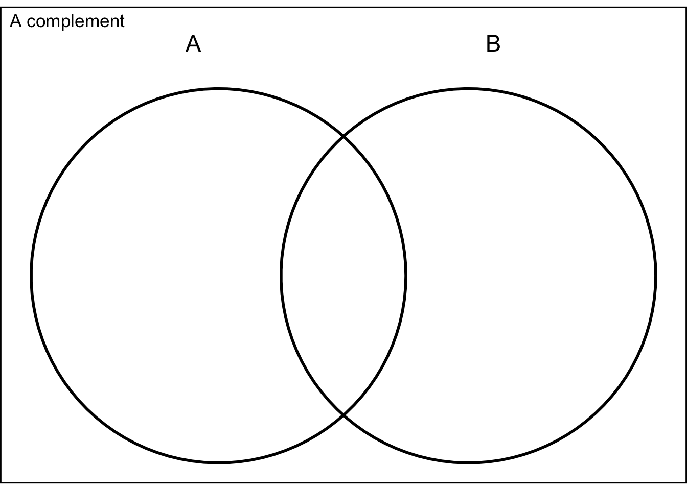
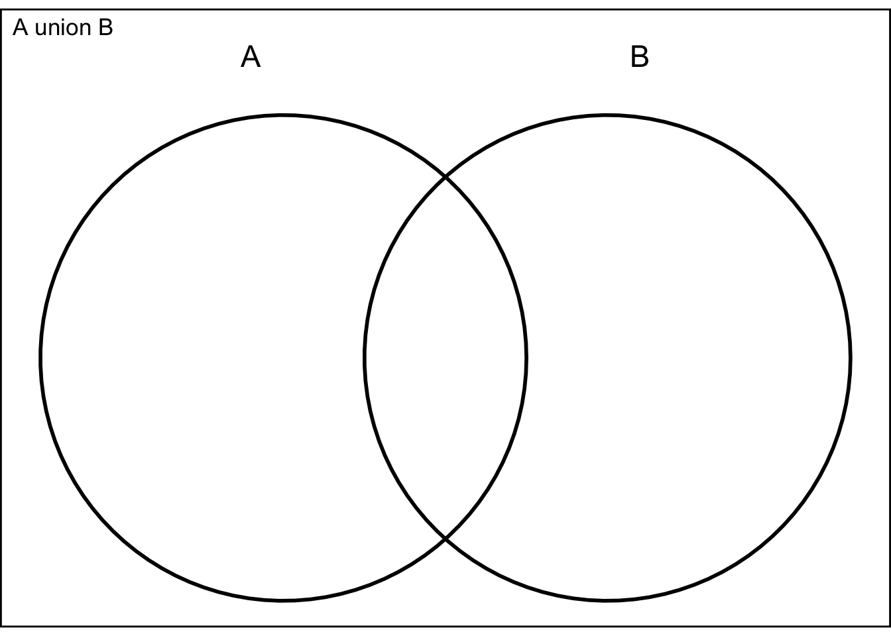
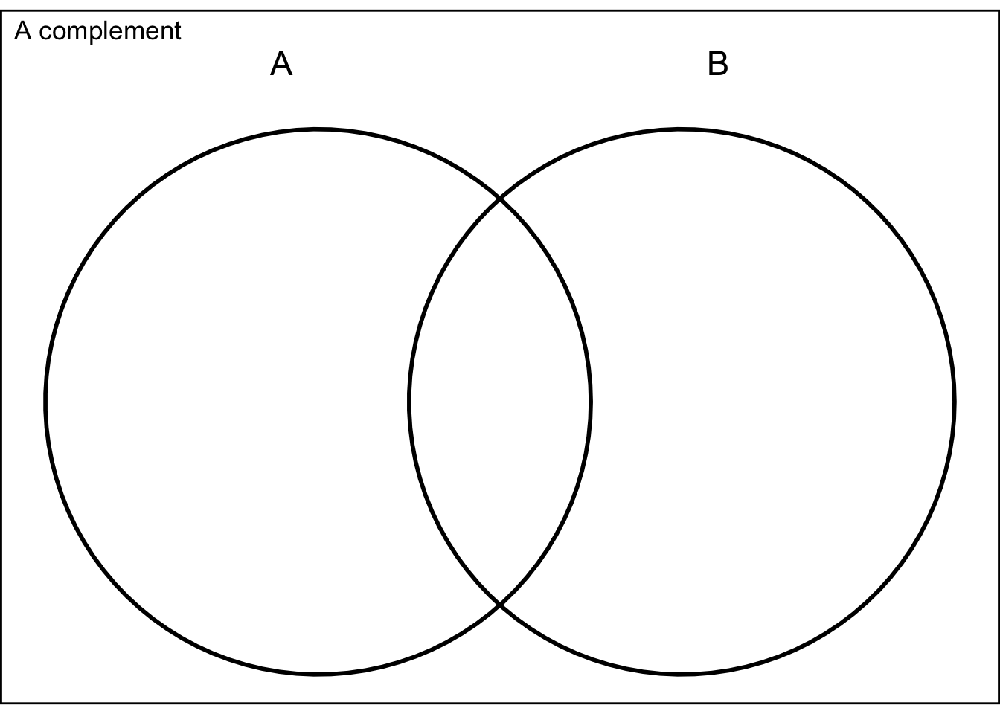

Rules for Calculating Probabilities
September 21, 2023
Let A and B be two events defined in the sample space S
union - \(A \cup B\) - is the event that either A or B or both occur
intersection - \(A \cap B\) - both A and B occur
complement - \(A^c\) is the event that A does not occur


Two fair cons are tossed and the outcome is recorded.
Define A, B, \(A \cup B\), \(A \cap B\), \(A^c\)
What are the events and what are the probabilities?
These concepts can be extended to more than two events (e.g. \(A \cup B \cup C\))
\[ P (A \cup B) = P(A) + P(B) - P(A \cap B) \]
mutually exclusive: \(P(A \cap B) = 0\)
Rule for complements: \(P(A^c) = 1 - P(A)\)
Drilling two exploratory wells:
A neither well produces oil or gas - 80%
B exactly one well produces oil or gas - 18%
C Both wells produce oil or gas - 2%
Find \(P(A \cup B)\) and \(P(B \cup C)\)
Two events A and B are independent if and only if the probability of event B is not influenced or changed by the occurrence of event A or vice versa.
Color blindness/gender vs tossing a dice
General Multiplcation Rule
\[ P(A \cap B) = P(A)P(B|A) = P(B)P(A|B) \]
\(P(A|B)\) is read as probability of A given B - assuming B occurs. If the two events are independent then \(P(A|B) = P(A|B^c) = P(A)\)
In a color preference experiment, eight toys are placed in a container. The toys are identical except fo color - two are red, and six are green. A child is asked to choose two toys at random. What is the probability that the child chooses the two red toys?
The conditional probability of event A given that event B has occured is:
\[ P(A|B) = \frac{P(A\cap B)}{P(B)} \text{ if } P(B) \neq 0 \]
\[ P(B|A) = \frac{P(A\cap B)}{P(A)} \text{ if } P(A) \neq 0 \]
| Men(\(B\)) | Women(\(B^c\)) | Total | |
|---|---|---|---|
| Colorblind (\(A\)) | .04 | .002 | .042 |
| Not Colorblind (\(A^c\)) | .47 | .488 | .958 |
| Total | .51 | .49 | 1 |
If you pick a random person what is the chance they are colorblind?
If you pick a random male, what is the chance he is colorblind?
What is the chance a woman is?
If two events A and B are independent, the probability that both A and B occur is:
\[ P(A \cap B) = P(A)P(B) \]
Same thing for more than two events:
\[ P(A \cap B \cap C) = P(A)P(B)P(C) \]
What the probability that the first toss is a heads, second toss is a tails, third toss is a heads?
What about all three tosses being heads?
Two events are said to be independent if and only if either:
\[ P(A\cap B) = P(A)P(B) \]
or
\[ P(B|A) = P(B) \]
Respondents were asked about the cost of a college education . The respondents were classified according to whether they currently had a chaild in college and whther they thought the loan burden for most college students is too high, the right amount or too little.
| Too High (A) | Right Amount (B) | Too Little (C) | |
|---|---|---|---|
| Child in College (D) | .35 | .08 | .01 |
| No Child in College (E) | .25 | .20 | .11 |
Is A independent of D?
Also Remember the question about shooting free throw - is making the second one independent of making the first one?
| Hit Second | Miss Second | |
|---|---|---|
| Hit First | .49 | .21 |
| Miss First | .21 | .09 |
[1] "4.4.1, 4.4.7-4.4.10, 4.4.14, 4.4.27, 4.4.29,4.4.32, 4.4.35"Answers: Chapter 4 - Section 4